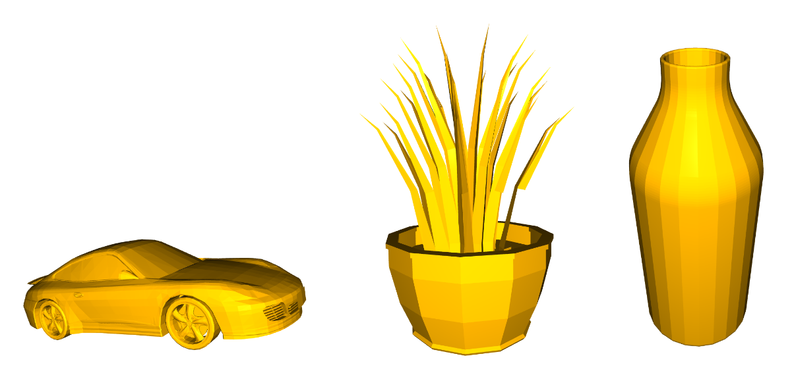
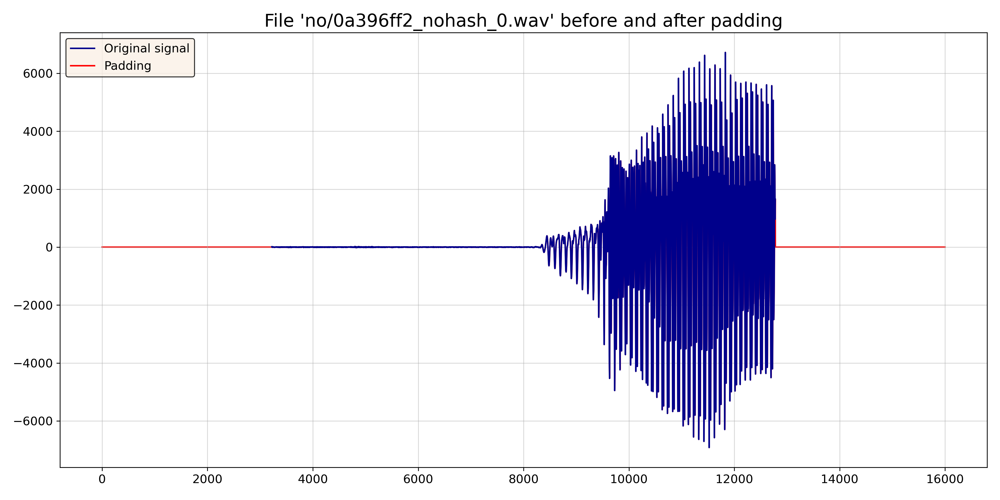
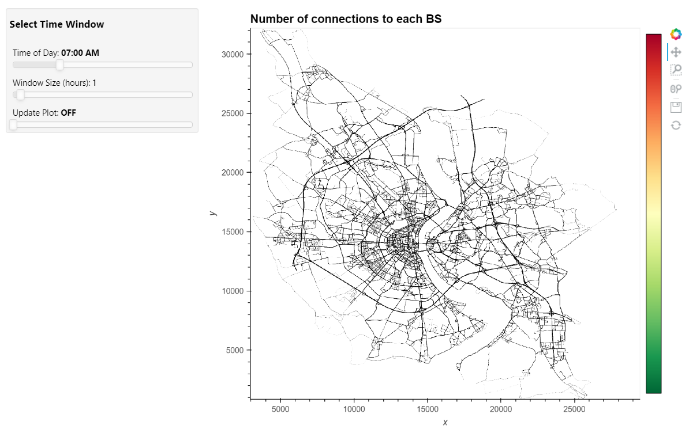
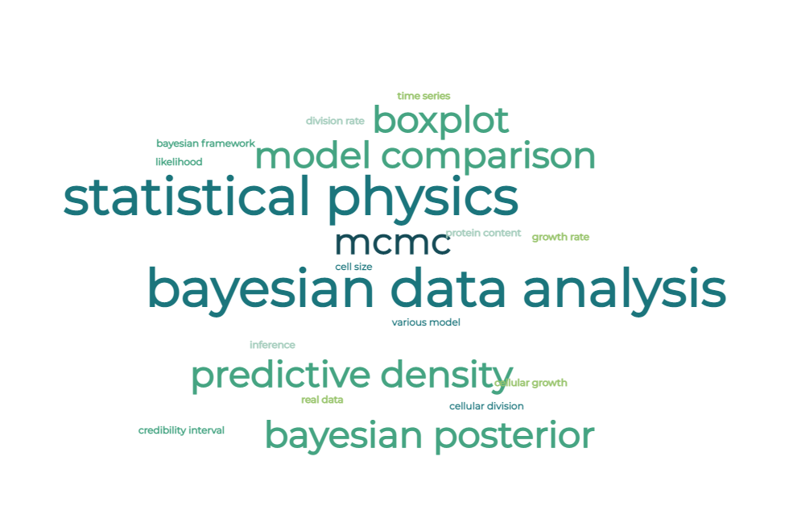

Data structure-oriented learning strategies for 3D Objects classification

Nowadays, the identification and understanding of 3D objects in real-world environments has a wide range of applications, including robotics and human-computer interaction. This is typically addressed using Deep Learning techniques that deal with 3D volumetric data, as they are generally able to outperform standard Machine Learning tools.
In this work, we experimented with several architectures based on Convolutional Neural Networks with the aim of classifying 3D objects. We ran our tests on the ModelNet40 dataset, one of the most popular benchmark in the context of 3D object recognition. First we compared the effectiveness of Point Clouds and Voxel grids, inspecting pros and cons of these representations. We saw how, for instance, the more accurate representation obtained via PC does not lead to better performance when dealing with CNNs, unless you have very large memory capacities. Then, we built an Autoencoder in order to retrieve an high-dimensional embedding of the input data. We showed that the application of simple ML techniques, such as SVM, on these intermediate representations can lead to state-of-the-art performances and codewords could be used for compression purposes. Finally, we provided a visual representation of the encoded features through t-SNE.
Effective processing pipeline and advanced Neural Network architectures for Small-footprint Keyword Spotting

The keyword spotting (KWS) task consists of identifying a relatively small set of keywords in a stream of user utterances. This is preferably addressed using small footprint inference models that can be deployed even on performance-limited and/or low-power devices. In this framework indeed, model performance is not the only relevant aspect and the model footprint plays an equally crucial role. In this work, first we defined a modern CNN model that outperforms our baseline model and we used it to study the impact of different pre-processing, regularization and feature extraction techniques. We saw how, for instance, the log Mel-filterbank energy features lead to the best performance and we discovered that the introduction of background noise on the train set with an optimal noise reduction coefficient of 0.5 helps the model to learn. Then, we explored different machine learning models, such as ResNets, RNNs, attention-based RNNs and Conformers in order to achieve an optimal trade-off between accuracy and footprint. We found that these architectures offer between a 30-40% improvement in accuracy compared to the baseline, while reducing up to 10× the number of parameters. We ran our tests on the Google Speech Commands dataset, one of the most popular datasets in the KWS context.
Finally, we realized a demo application that can be run as a python script. It allows the user to select the model he wants to use and, when started, it detects real-time the commands in the Speech Commands Dataset through the microphone (or any chosen input device).
Koln Traffic Regulator with Parallel Computing

Our work started from a project jointly developed by IBM and by the German city of Koln thought to be a first step towards traffic regulation and an efficient exploitation of transport's resources. In particular, we analyzed a set of mobility data emulated with SUMO, consisting of 394 million records and 20 Gb in size. To reach our goals, we set up a cluster on CloudVeneto made of 5 virtual machines (4 cores and 8 GB RAM each) and created a volume, shared across the instances using a NFS. Moreover, we used Dask to parallelize the tasks.
First, we computed some interesting metrics, comparing the performances using groupby with Dask Dataframe and foldby with Dask Bag. Then, starting with an already processed dataset containg the number of connections to each base station at each time instant, we realized an interactive dashboard, which allows to visualize the number of connections to each base station in a selected time window. With the same dataframe, we also simulated a data stream with streamz, emitting the information related to a specific time instant one next to the other and updating some plots on the fly. Finally, we performed some benchmarks on a pruned version of the dataset (~ 1 GB), trying different values of the main parameters of our setup, such as the number of files in the import of the data, the number of workers for each machine, the number of threads per worker and the block size used to read and import the data.
Explaining microbial scaling laws using Bayesian inference

In this project, we combined methods from Statistical Physics and Bayesian Data Analysis to elucidate the principles behind cellular growth and division. We studied various classes of individual-based growth-division models and inferred individual-level processes (model structures and likely ranges of associated parameters) from sigle-cell observations.
In the Bayesian framework, we formalized our process understanding the form of different rate functions, expressing the dependence of growth and division rates on variables characterizing the cell’s state (such as size and protein content). We calculated the Bayesian posteriors for the parameters of these functions and performed a model comparison to determine which was more consistent with the data coming from experimental observations.

{kind=link}
{kind=link}
{kind=link}
{kind=link}